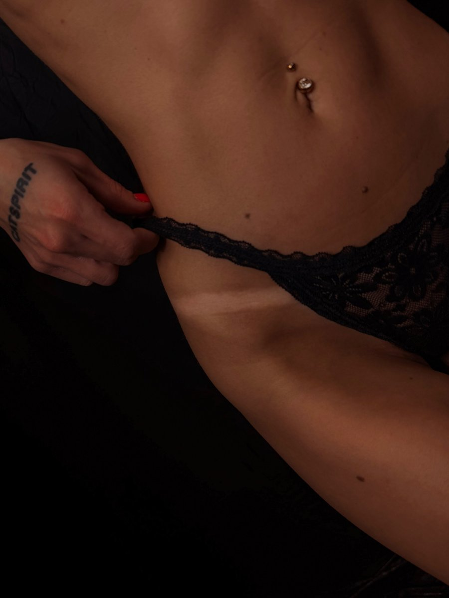

Az UV-mentes barnítás (spray tan) egyenletes, természetes barnaságot ad szolárium és napégés nélkül. A végeredmény szépsége nagyban múlik azon, hogyan készülsz a kezelésre, és hogyan vigyázol rá utána. Összegyűjtöttem a legfontosabb tudnivalókat.
Miért UV-mentes barnítás?
Nem ér UV-sugárzás, így nincs napégés és nincs bőröregedés, a szín mégis egyenletes és természetes. A kezelés professzionális spray tan oldattal történik, az árnyalatot pedig a bőrtónusodhoz igazítom a természetes, csíkmentes végeredményért.
Hogyan készülj a spray tanre?
- Szőrtelenítés: ha szükséges, legalább 24 órával a kezelés előtt történjen meg.
- Radírozás: a bőröd előző nap érdemes kíméletesen leradírozni.
- Hidratálás, de nem a kezelés napján: a kezelés előtti és utáni napokban mindig hidratáld a bőröd, a kezelés napján viszont ne használj testápolót, olajat vagy zsíros krémet.
- Kozmetikumok: közvetlenül a kezelés előtt és után kerüld a dezodort, a parfümöt és az egyéb kozmetikumokat.
- Tiszta, száraz bőr: a bőröd legyen tiszta és száraz.
- Öltözet: laza, sötét ruhában érkezz.
Nagyon fontos
A hidratálás az előző napokban hasznos, de közvetlenül a spray tan előtt ne maradjon zsíros vagy krémes réteg a bőrödön.
A kezelés után
- Mikor zuhanyozhatok? A kezelés után 6 óra elteltével.
- Fogja-e a ruhát? Az első órákban a festék még a bőr felszínén van, ezért kis mértékben foghatja a világos ruhát. Az első zuhanyzás után már nem fog.
- Lehet-e edzeni? Az első zuhanyzásig, vagyis legalább 6 óráig kerüld az edzést és az izzadást, mert az foltossá teheti a színt.
A további teendőket a helyszínen részletesen elmondom.
Meddig tart a barnaság?
Megfelelő ápolással 8–10 napig. Ha rendszeresen szeretnél barna lenni, a 3, 5 és 10 alkalmas bérlettel kedvezőbb áron jöhetsz.
Gyakori kérdések
- Mennyire leszek barna? Az árnyalatot a bőrtónusodhoz és a kívánságodhoz igazítom, a természetes, enyhén napcsókolta hatástól a mélyebb barnaságig.
- Narancssárga lehet-e? Nem. Professzionális oldattal és a bőrtónusodhoz igazított árnyalattal természetes, csíkmentes barnaságot kapsz.
- Esküvő előtt hány nappal érdemes menni? Az esemény előtt 2 nappal, hogy a szín addigra teljesen kifejlődjön, és a legszebb legyen a nagy napon.
Árak
Glow Touch10 000 Ft1 alkalom
Glow Trio26 000 Ft3 alkalmas bérlet
Golden Glow40 000 Ft5 alkalmas bérlet
Signature Glow79 000 Ft10 alkalmas bérlet
Glow Together18 000 Ftpáros kezelés 2 fő részére
Részletek: Spray tan · Árak és bérletek · GYIK
Készen állsz a ragyogásra?